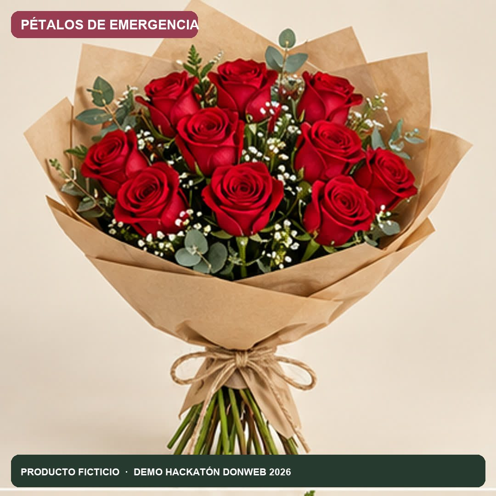
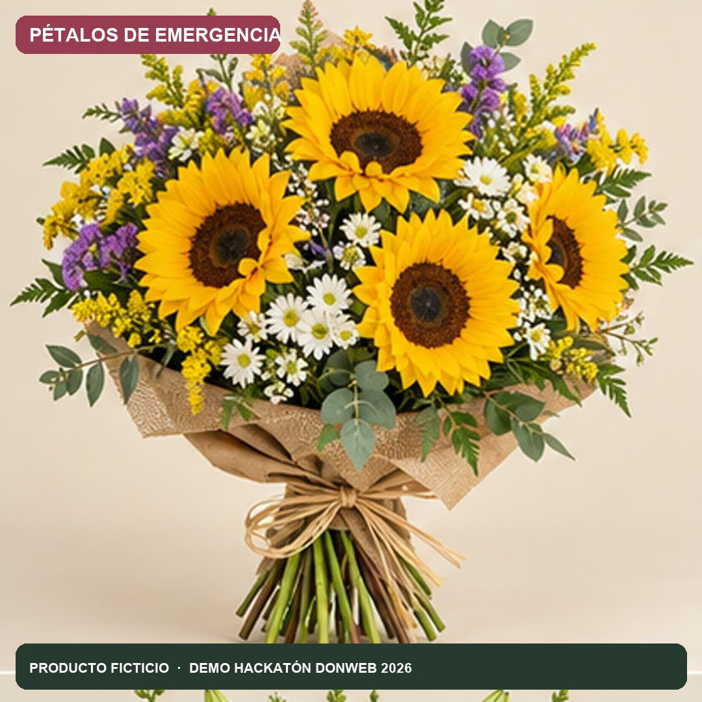

CATÁLOGO FLORAL · ROSARIO
Un gesto para
cada momento.
Elegí el arreglo. Flora te ayuda a encontrar las palabras, preparar la tarjeta y coordinar la entrega.
☁ Productos ficticios · Demo Hackatón DonWeb 2026


Hecho hoy
en la nube
DonWeb ✿
en la nube
DonWeb ✿
Flores con intención ✿ Flora te ayuda a elegir ✿ Hecho en DonWeb Cloud
01
Para las macanas
Un perdón puede empezar con flores.
02
Para festejar
Buenas noticias, gracias y abrazos.
03
Para acompañar
Un gesto sobrio cuando más importa.